参考サービスと機能
サービス別
ZillowはFSBO掲載、3D Home、間取り連動、Virtual Staging、Zestimateがまとまっており、ReOpenの「見えない不安」と「価格不安」を下げる参考として最も重要。
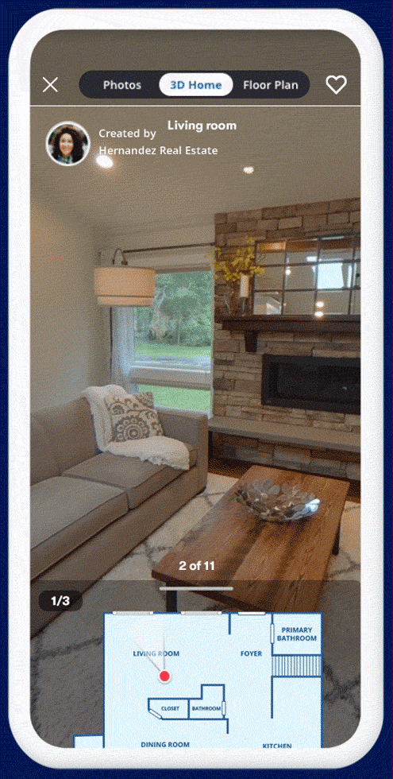
該当URL: Zillow 3D Home / Floor Plans
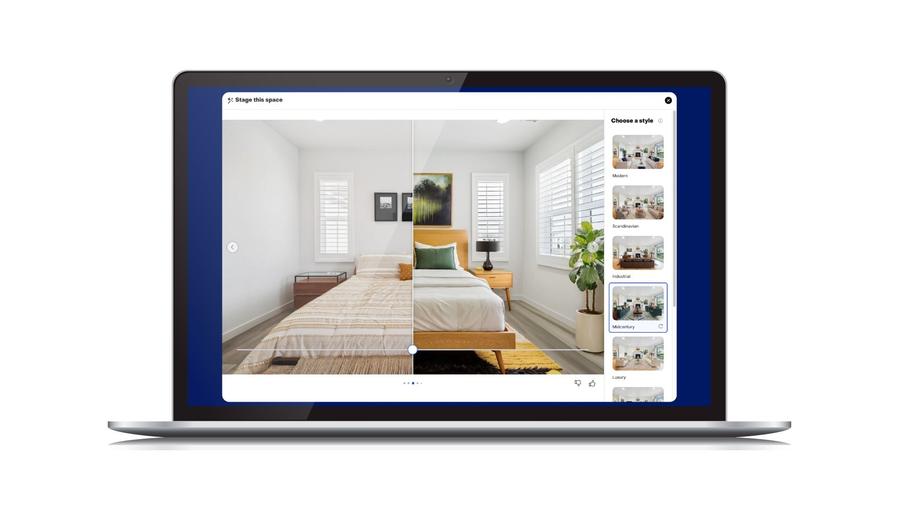
該当URL: Zillow Virtual Staging announcement
Zestimate精度（都市圏別）
| 都市圏 | 中央値誤差 | 5%以内 | 10%以内 | 20%以内 |
|---|---|---|---|---|
| アトランタ | 1.45% | 88.34% | 96.58% | 98.96% |
| オースティン | 1.85% | 85.03% | 95.41% | 99.08% |
| ボストン | 2.32% | 78.87% | 95.12% | 99.46% |
該当URL: Zillow Zestimate
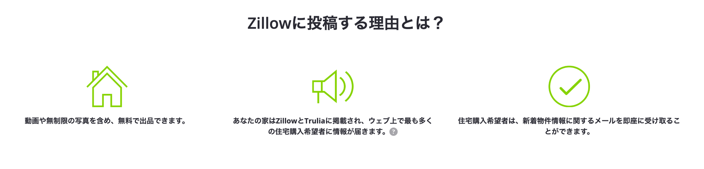
該当URL: Zillow For Sale by Owner
Redfinは完全CtoCではないが、3D Walkthrough、Homebuying Guide、FSBOを直接投稿ではなく外部取り込みにする構造が参考になる。ReOpenではRedfin Owner Estimateの「類似物件を選ぶ」発想は採用しない。中古マンション中心のため、価格根拠は同一マンション内の成約・売出しを優先する。
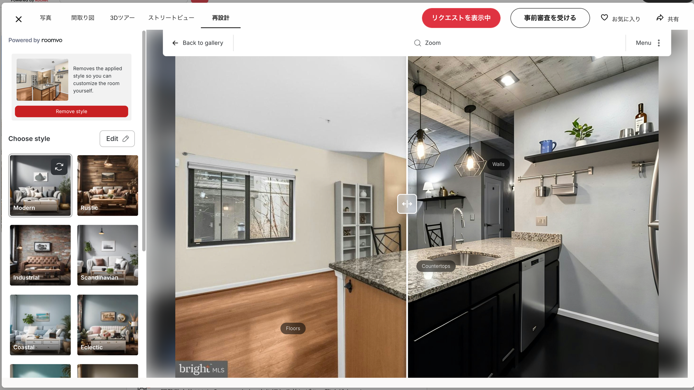
該当URL: Redfin物件ページ（Re-Design付き）
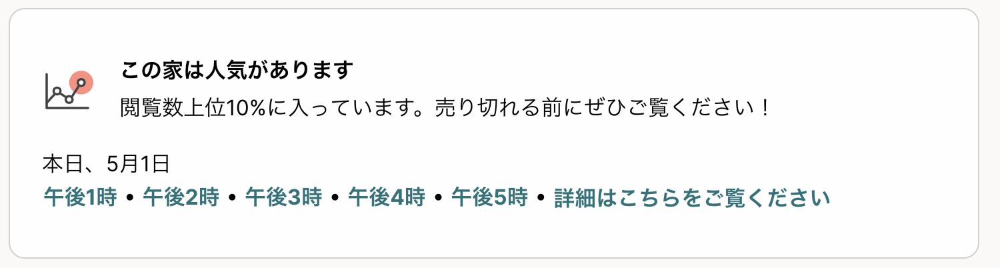
該当URL: Redfin物件ページ
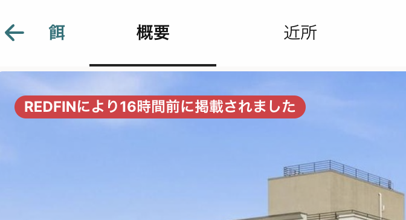
該当URL: Redfin物件ページ
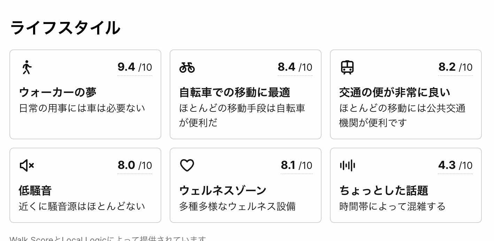
該当URL: Redfin物件ページ
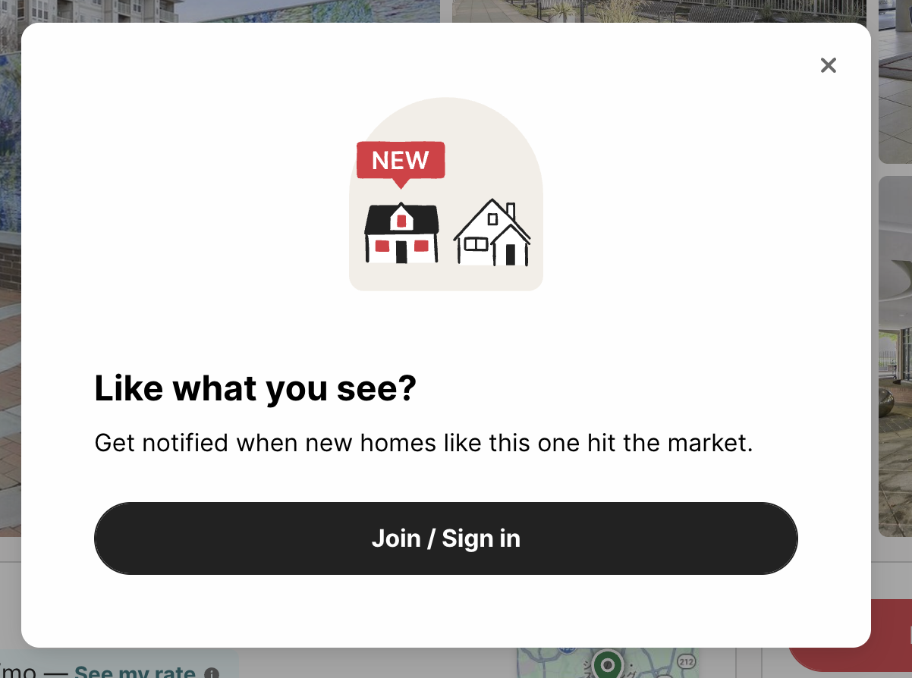
該当URL: Redfin物件ページ
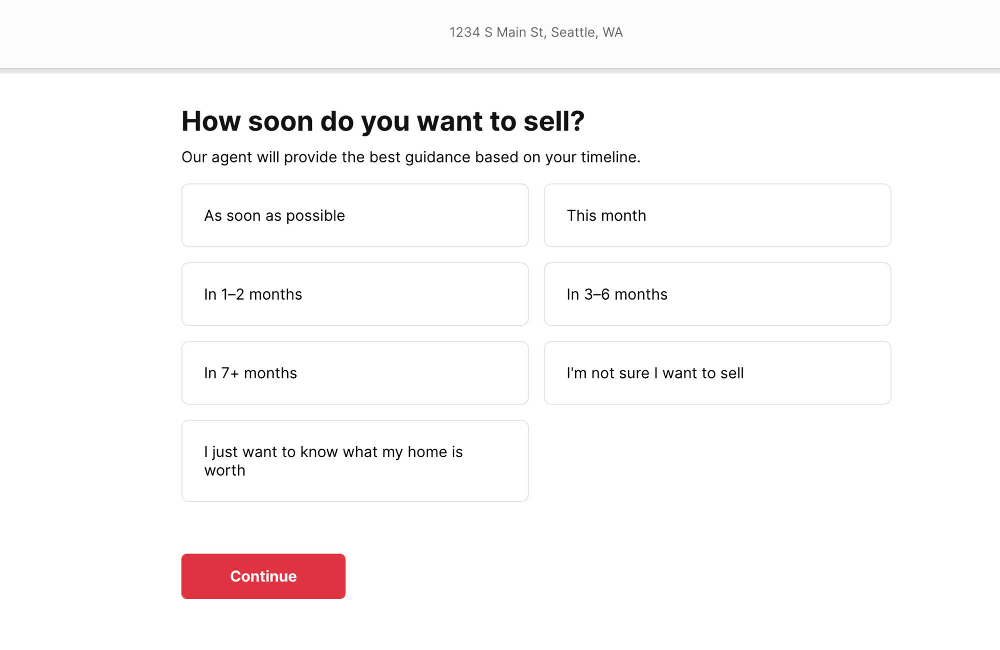
該当URL: Redfin 売主フロー
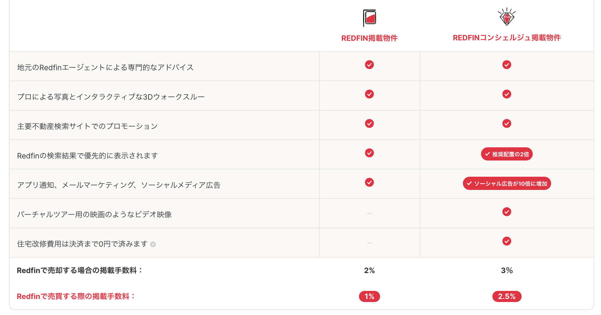
該当URL: Redfin Why Sell
ヘルプ上で、個人オーナー/売主が住宅の賃貸、売買、シェアハウスをagentなしで掲載できると明記している。契約書等の書類追加、内見日時、売却済み/賃貸済みステータス更新、代理店への移管導線があり、管理型CtoCに近い参考。
Allhomesに掲載されている個人広告
はい。Allhomes.com.auの「マイリスティング」セクションで、非公開のリスティングを作成できます。Allhomesは、不動産業者を通さずに賃貸、売買、シェアハウスなどの住宅物件を掲載したい個人向けのプラットフォームを提供しています。
私の物件情報はAllhomesにどれくらいの期間掲載されますか？
該当URL: Allhomes Private Ads
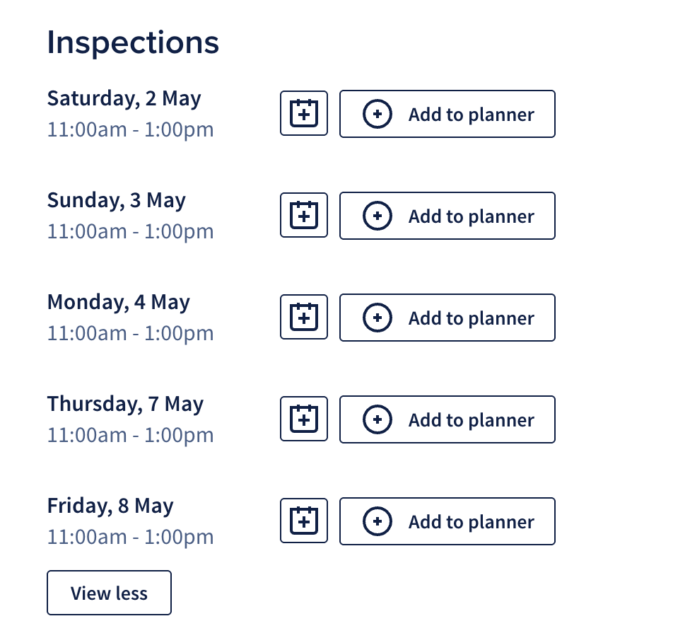
該当URL: Allhomes物件ページ
HomaはCtoCではないが、買主がエージェントなしでも進められるように、AI分析、書類レビュー、オファー作成、クロージング管理を組み合わせている。加えて、登録前に物件価格ベースで手数料削減余地を試算できるため、ReOpenの「使う理由」を金額で体感させる参考として強い。
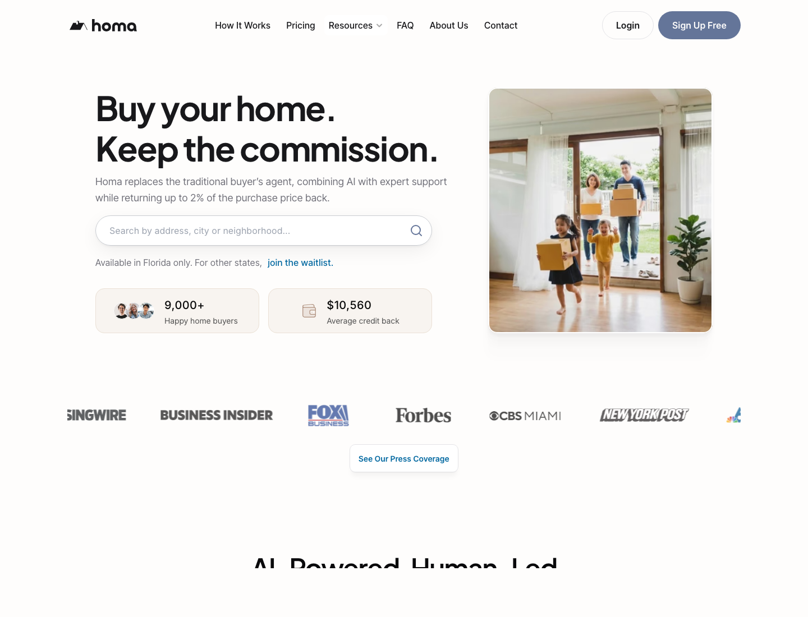
該当URL: Homa official site
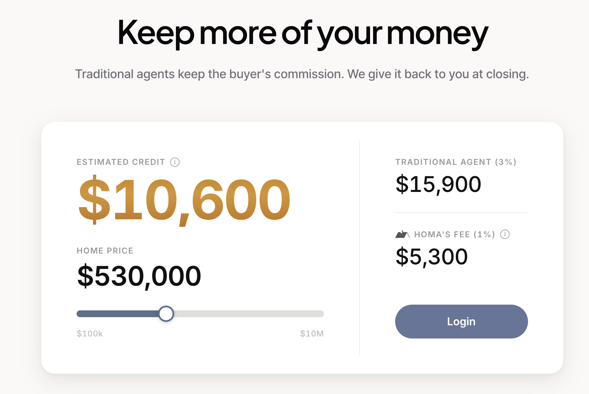
該当URL: Homa official site
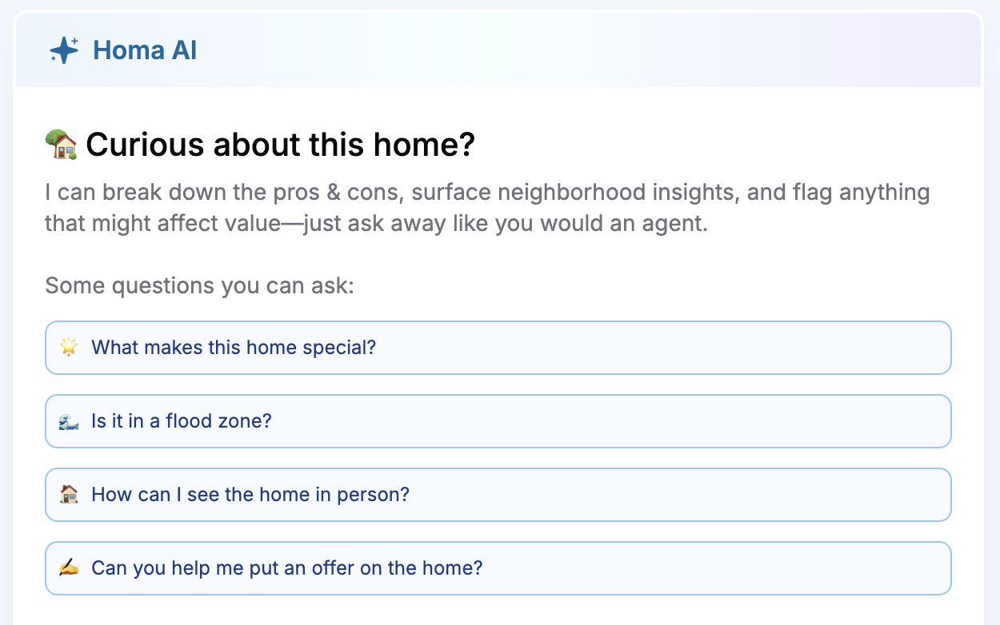
ReOpen転用案: 物件ページ内に常駐するAI＋出品物件ごとの質問テンプレ。第一段はテンプレ＋専門家への取次のみとし、AI回答は段階導入。契約・重要事項は必ず専門家へエスカレーションする。
該当URL: Homa official site
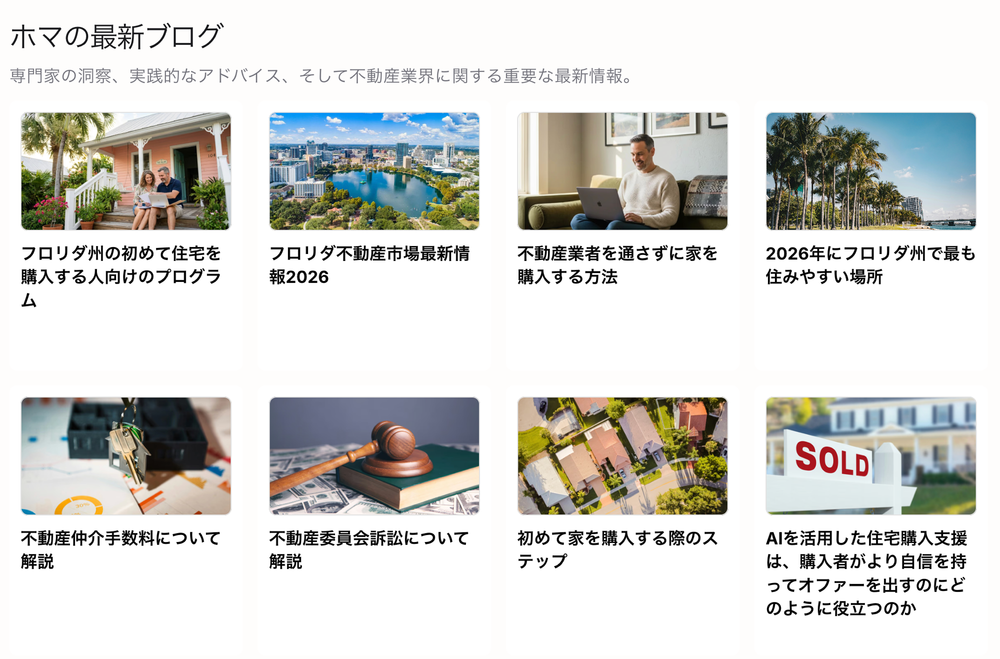
該当URL: Homa Blog
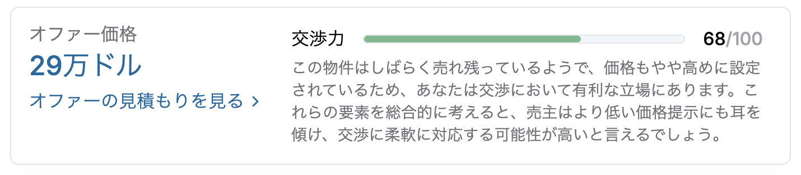
該当URL: Homa物件ページ
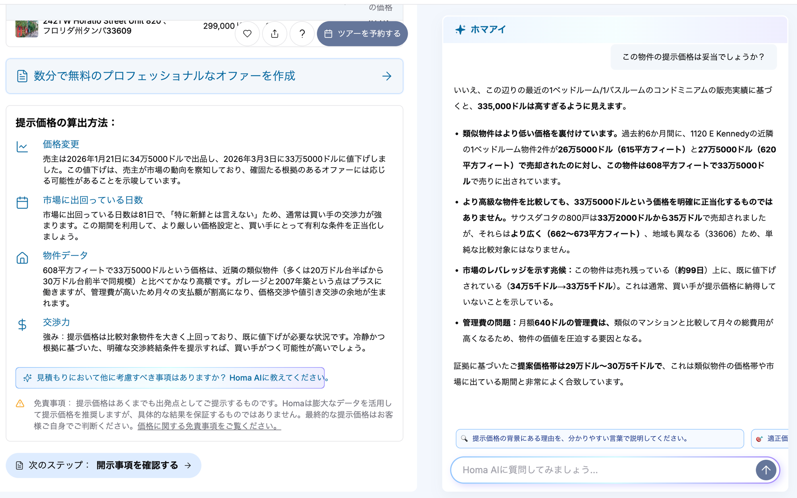
該当URL: Homa物件ページ